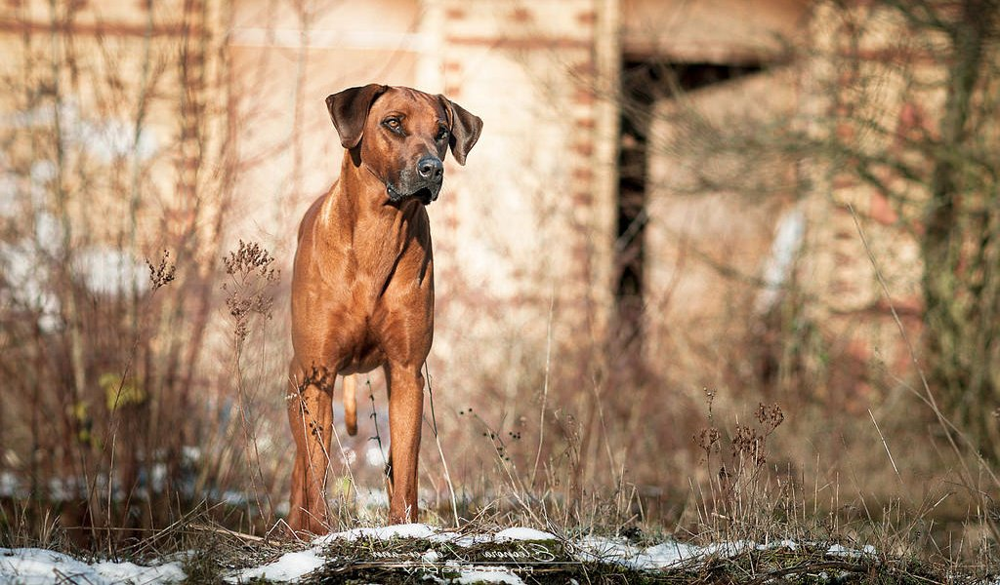

Родезийский риджбек – харизматичный выходец из Африки с продолговатой «меткой» на спине. Фанаты породы приписывают своим подопечным массу достоинств, среди которых высокий интеллект, фантастическая стрессоустойчивость, умение правильно оценивать ситуацию и действовать по обстоятельствам, без оглядки на владельца. Однако даже с учетом перечисленных качеств портрет породы будет неполным, если не упомянуть удивительную энергичность ее представителей. Именно страсть к активному образу жизни в сочетании с врожденным стремлением к самостоятельности превращает родезийских риджбеков в достаточно взыскательных питомцев, требующих от хозяина повышенного внимания и самоотдачи.